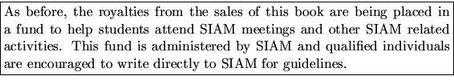

Since its initial public release in February 1992, LAPACK has expanded in both depth and breadth. LAPACK is now available in both Fortran and C. The publication of this second edition of the Users' Guide coincides with the release of version 2.0 of the LAPACK software.
This release of LAPACK introduces new routines and extends the functionality of existing routines. Prominent among the new routines are driver and computational routines for the generalized nonsymmetric eigenproblem, generalized linear least squares problems, the generalized singular value decomposition, a generalized banded symmetric-definite eigenproblem, and divide-and-conquer methods for symmetric eigenproblems. Additional computational routines include the generalized QR and RQ factorizations and reduction of a band matrix to bidiagonal form.
Added functionality has been incorporated into the expert driver routines that involve equilibration (xGESVX, xGBSVX, xPOSVX, xPPSVX, and xPBSVX). The option FACT = 'F' now permits the user to input a prefactored, pre-equilibrated matrix. The expert drivers xGESVX and xGBSVX now return the reciprocal of the pivot growth from Gaussian elimination. xBDSQR has been modified to compute singular values of bidiagonal matrices much more quickly than before, provided singular vectors are not also wanted. The least squares driver routines xGELS, xGELSS, and xGELSX now make available the residual root-sum-squares for each right hand side.
All LAPACK routines reflect the current version number with the date on the routine indicating when it was last modified. For more information on revisions to the LAPACK software or this Users' Guide please refer to the LAPACK release_notes file on netlib. Instructions for obtaining this file can be found in Chapter 1.
On-line manpages (troff files) for LAPACK routines, as well as for most of the BLAS routines, are available on netlib. Refer to Section 1.9 for further details.
We hope that future releases of LAPACK will include routines for reordering eigenvalues in the generalized Schur factorization; solving the generalized Sylvester equation; computing condition numbers for the generalized eigenproblem (for eigenvalues, eigenvectors, clusters of eigenvalues, and deflating subspaces); fast algorithms for the singular value decomposition based on divide and conquer; high accuracy methods for symmetric eigenproblems and the SVD based on Jacobi's algorithm; updating and/or downdating for linear least squares problems; computing singular values by bidiagonal bisection; and computing singular vectors by bidiagonal inverse iteration.
The following additions/modifications have been made to this second edition of the Users' Guide:
Chapter 1 (Essentials) now includes information on accessing LAPACK via the World Wide Web.
Chapter 2 (Contents of LAPACK) has been expanded to discuss new routines.
Chapter 3 (Performance of LAPACK) has been updated with performance results from version 2.0 of LAPACK. In addition, a new section entitled ``LAPACK Benchmark'' has been introduced to present timings for several driver routines.
Chapter 4 (Accuracy and Stability) has been simplified and rewritten. Much of the theory and other details have been separated into ``Further Details'' sections. Example Fortran code segments are included to demonstrate the calculation of error bounds using LAPACK.
Appendices A, B, and D have been expanded to cover the new routines.
Appendix E (LAPACK Working Notes) lists a number of new Working Notes, written during the LAPACK 2 and ScaLAPACK projects (see below) and published by the University of Tennessee. The Bibliography has been updated to give the most recent published references.
The Specifications of Routines have been extended and updated to cover the new routines and revisions to existing routines.
The Bibliography and Index have been moved to the end of the book. The Index has been expanded into two indexes: Index by Keyword and Index by Routine Name. Occurrences of LAPACK, LINPACK, and EISPACK routine names have been cited in the latter index.
The original LAPACK project was funded by the NSF. Since its completion, two follow-up projects, LAPACK 2 and ScaLAPACK, have been funded in the U.S. by the NSF and ARPA in 1990-1994 and 1991-1995, respectively. In addition to making possible the additions and extensions in this release, these grants have supported the following closely related activities.
A major effort is underway to implement LAPACK-type algorithms for distributed memory machines. As a result of these efforts, several new software items are now available on netlib. The new items that have been introduced are distributed memory versions of the core routines from LAPACK; a fully parallel package to solve a symmetric positive definite sparse linear system on a message passing multiprocessor using Cholesky factorization; a package based on Arnoldi's method for solving large-scale nonsymmetric, symmetric, and generalized algebraic eigenvalue problems; and templates for sparse iterative methods for solving Ax=b. For more information on the availability of each of these packages, consult the scalapack and linalg indexes on netlib via netlib@www.netlib.org.
We have also explored the advantages of IEEE floating point arithmetic [4] in implementing linear algebra routines. The accurate rounding properties and ``friendly'' exception handling capabilities of IEEE arithmetic permit us to write faster, more robust versions of several algorithms in LAPACK. Since all machines do not yet implement IEEE arithmetic, these algorithms are not currently part of the library [33], although we expect them to be in the future. For more information, please refer to Section 1.12.
LAPACK has been translated from Fortran into C and, in addition, a subset of the LAPACK routines has been implemented in C++. For more information on obtaining the C or C++ versions of LAPACK, consult Section 1.12 or the clapack or c++ indexes on netlib via netlib@www.netlib.org.
We deeply appreciate the careful scrutiny of those individuals who reported mistakes, typographical errors, or shortcomings in the first edition.
We acknowledge with gratitude the support which we have received from the following organizations and the help of individual members of their staff: Cray Research Inc.; NAG Ltd.
We would additionally like to thank the following people, who were not acknowledged in the first edition, for their contributions:
Françoise Chatelin, Inderjit Dhillon, Stan Eisenstat, Vince Fernando, Ming Gu, Rencang Li, Xiaoye Li, George Ostrouchov, Antoine Petitet, Chris Puscasiu, Huan Ren, Jeff Rutter, Ken Stanley, Steve Timson, and Clint Whaley.
